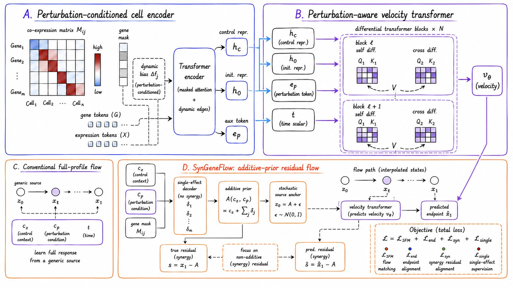
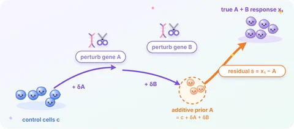
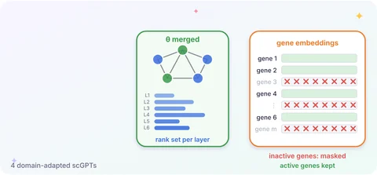
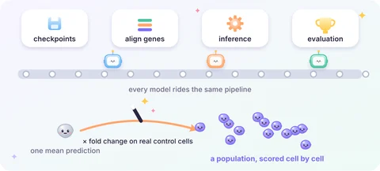
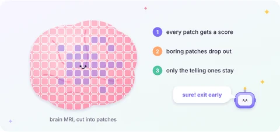
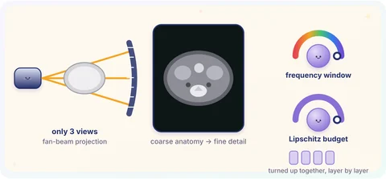
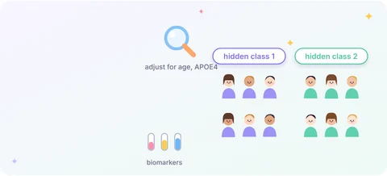
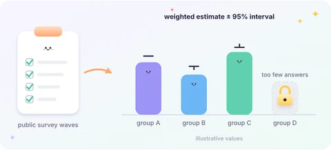

Machine learning for single-cell biology and medical imaging.
My work spans single-cell perturbation prediction, single-cell foundation models, and medical imaging. In summer 2026 I was a research intern at the Abudayyeh–Gootenberg Lab at Harvard Medical School. Before statistics, I studied finance.
Applying to PhD programs in Electrical and Computer Engineering and Computer Science for Fall 2027Publications
-
WACV2027
Taming Neural Fields with a Frequency-Lipschitz Curriculum for Sparse-View CT Reconstruction
IEEE/CVF Winter Conference on Applications of Computer Vision

-
BIBM2026
Synergy-Aware Residual Flow Matching for Single-Cell Perturbation Prediction
IEEE International Conference on Bioinformatics and Biomedicine

-
BIBM2026
Biology-Aware Model Merging for Domain-Adapted Single-Cell Foundation Models
IEEE International Conference on Bioinformatics and Biomedicine

*Co-first author. †Corresponding author.
Research
Single-cell perturbation and foundation models
- SynGeneFlow2025.09 – 2026.01A flow-matching model that starts from the additive guess and learns only how two perturbations interact.BIBM 2026Read more →

- Biology-aware model merging2025.12 – 2026.04Merging domain-adapted scGPT models without data, by giving each layer the rank it needs and ignoring genes the data never touched.BIBM 2026Read more →

- Benchmarking a single-cell foundation model2026.05 – 2026.08A reproducible benchmark for a lab's perturbation-aware foundation model, including a way to score mean-level baselines cell by cell.Harvard Medical SchoolRead more →

Medical imaging
- Dynamic token thinning for Alzheimer's disease classification2026.09 – presentA vision transformer for brain MRI that learns which image patches to drop, and stops early when it is already sure.Read more →

- Sparse-view CT with a frequency–Lipschitz curriculum2026.01 – 2026.06Teaching a neural field to draw the anatomy first and the fine detail last, so it does not fit streak artifacts.WACV 2027Read more →

Statistical methodology
- Semiparametric latent variable modeling2026.01 – presentFinding hidden patient subgroups from biomarkers, while accounting for age and genetics and without assuming a distribution.Read more →

- National Dementia Workforce Study dashboard2026.09 – 2026.12Survey-weighted estimates about the dementia care workforce, with honest uncertainty and rules for when not to show a number.Read more →

Education
Rice University
2025.09 – 2026.12Master of Statistics, Houston, TX
Hunan University of Finance and Economics
2019.09 – 2023.06Bachelor of Finance, Changsha, China
Honors & Awards
Rice Engineering Alumni (REA) Graduate Student Travel Grant
2026For presenting at IEEE BIBM 2026
University Scholarship
2020, 2021Hunan University of Finance and Economics
Beyond research
- Dancing & K-popLately on repeat: BESTie’s reunion stage of “Love Options”, eleven years after their last music show.Watch the stageShow! Music Core · Oct 31, 2026 ↗
- Food explorationComfort food, two ways: a big bowl of pho, or spicy Sichuan mao cai.
pho mao cai 冒菜 - Psychology & philosophyTo be human is to bear the lack at the heart of being a subject, not to retreat somewhere perfectly safe and gratify ourselves with illusions.
- People and the worldCurious about how we relate to each other, and to the world we live in.
Get in touch
I'm glad to talk about research or PhD opportunities. Email me at jw310@rice.edu.